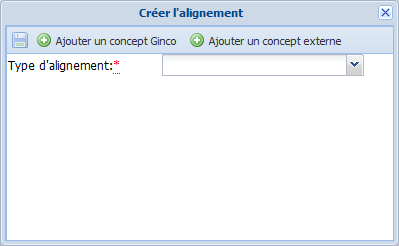

Alignements
Ajout d'un alignement⚓
ProcédureAjouter un alignement⚓
Dans la zone d'édition du
Concept, cliquez sur le bouton
Ajouter un alignement.La fenêtre
Créer l'alignements'affiche.RéglementaireFenêtre Créer l'alignement⚓
La fenêtre
Créer l'alignementpermet de réaliser 2 types d'alignements[1] :avec un
Conceptd'un autre vocabulaire Ginco ;avec un
Conceptd'un vocabulaire externe.
Sélectionnez le type d'alignement que vous souhaitez créer à l'aide du bouton
 correspondant.
correspondant.Complétez les champs de cette fenêtre puis cliquez sur
 .
.AttentionImportant⚓
Les champs suivis d'un astérisque rouge sont obligatoires.
ComplémentTypage des alignements⚓
Pour en savoir plus sur les différents types d'alignements disponibles : Typage des alignements
La fenêtre
Créer l'alignementse referme. L'alignement est ajouté auConcept.
Cliquez sur
Enregistrerpour sauvegarder les modifications apportées auConcept.
Modification d'un alignement⚓
ProcédureModifier un alignement⚓
Cliquez sur le bouton à droite de la ligne de l'alignement que vous souhaitez modifier.
La fenêtre
Créer l'alignements'affiche.
Apportez les modifications souhaitées à l'alignement puis cliquez sur
.AttentionImportant⚓
Les champs suivis d'un astérisque rouge sont obligatoires.
La fenêtre
Créer l'alignementse referme.
Cliquez sur
Enregistrerpour sauvegarder les modifications apportées auConcept.
Suppression d'un alignement⚓
ProcédureSupprimer un alignement⚓
Cliquez sur le bouton
 à droite de la ligne de l'alignement que vous souhaitez supprimer.
à droite de la ligne de l'alignement que vous souhaitez supprimer.Cliquez sur
Enregistrerpour sauvegarder les modifications apportées auConcept.